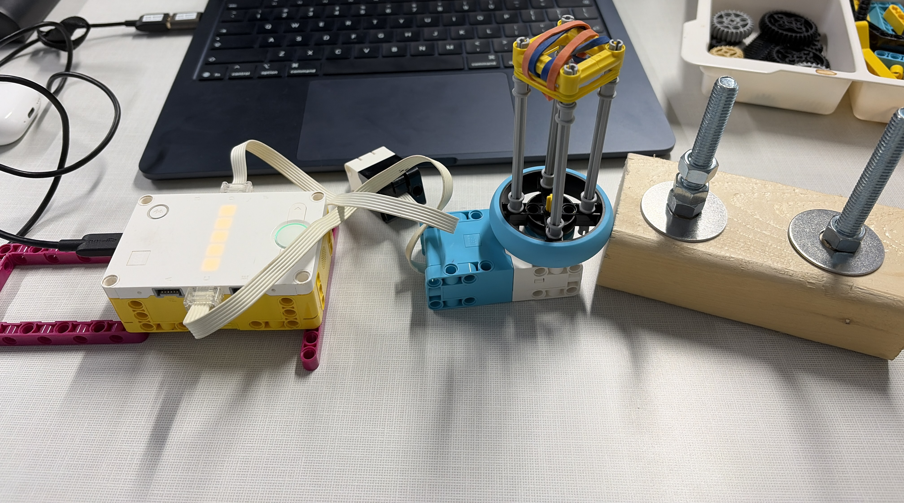

The astronaut tool did not work as intended because the nuts would not move; the gray mills were too wide.
# Motor is connected to port C.
# The Force Sensor is connected to port D.
from hub import port
import runloop
import motor
import force_sensor
# Set the motor's maximum speed in degrees per second.
MAX_SPEED = 660
async def main():
# Set the direction for the first press.
direction = 1
was_pressed = False
# Keep checking the Force Sensor.
while True:
pressed = force_sensor.pressed(port.D)
if pressed:
# Reverse direction when a new press begins.
if not was_pressed:
direction = -direction
# Set the motor speed based on how hard the sensor is pressed.
force = force_sensor.force(port.D)
speed = int(force * MAX_SPEED / 100)
# Run the motor in the selected direction.
motor.run(port.C, direction * speed)
else:
# Stop the motor when the sensor is released.
motor.stop(port.C)
# Remember the press state for the next check.
was_pressed = pressed
# Wait briefly before checking the sensor again.
await runloop.sleep_ms(20)
runloop.run(main())The code repeatedly checks the Force Sensor on port D. When the sensor is pressed, the motor on port C runs; pressing harder increases its speed, up to the maximum of 660 degrees per second. The motor reverses direction each time a new press begins and stops when the sensor is released. The short wait lets the program check the sensor again. This controls the motor, but it cannot make the nuts move if the tool's gray mills are too wide to grip them.
My best time is shown on the right-hand side, and it takes about 22 seconds.
Watch the Project 8 video on YouTube
Working with gloves was difficult at first, but it became easier with practice. The one-hand rule made this a challenge to complete using only one hand. For a real astronaut, I would make the tool stronger so it could grip the nuts more reliably; mine sometimes broke during use.